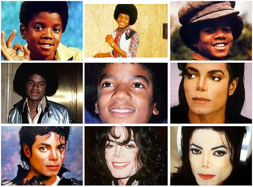

@June 26,2009
上班路上听到新闻报道Michael Joseph Jackson 因心脏骤停逝世，这位上世纪的音乐巨星年仅50岁，生前他已患有皮肤癌。MJ原本计划今年夏天举办最后一次演唱会作为谢幕...
还是喜欢早期的MJ，大大的鼻头，深古铜色的皮肤，黑卷发，多可爱啊。他是照着麦当娜整型的吗？把自己折腾成尖鼻子，白皮肤...追求心中的完美追求到极致，天晓得是为了愉悦自己还是心理错位？！按照中国迷信说法，自他整容后，风水是不是也会随之发生变化呢？
观察一下周围失爱的人，要么拼命折腾外型；要么迅速走向另一种行为极端；或者处于一段时期内的性格改变.....总之心理的错位，让人变得不可思议，让人迷失自己！MJ经历事业滑坡加上之后的恋童癖丑闻...我觉得死亡对MJ是彻底地解脱！
@June 27,2009
用半天看MJ的MV，听他歌，看他舞...前无古人，后.....是否有来者？
《STRANGER IN MOSCOW 》MV中，比如鸽子摆动翅膀，雨水溅起的水花、打翻的咖啡、雨中的马蜂以及棒球击碎玻璃窗的瞬间等等细节皆用高速摄影机拍摄，用24桢/1秒速度播放，画面中的每个动作的细节都象放慢动作一样，我个人很喜欢这部MV的调调。
据说Michael Jackson在俄罗斯的酒店里，听着楼下无数歌迷的热烈欢呼，内心却感到无比孤独，于是立刻创作了此曲。

I was wandering in the rain 我徘徊雨中
Mask of life, feelin' insane 生活的假面，令人疯癫欲狂
Swift and sudden fall from grace 飞速坠落，众神不再眷顾
Sunny days seem far away 艳阳天似乎还是遥不可及
Kremlin's shadow belittlin' me 克宫阴影投射，使我显得如此渺小
Stalin's tomb won't let me be 斯大林之墓不会听任我自由
On and on and on it came 慢慢地，它来了
Wish the rain would just let me 希望这雨终能令我畅怀
How does it feel (How does it feel) 这是什么感觉（这是什么感觉）
How does it feel 什么感觉
How does it feel 什么感觉
When you're alone 当你孤单时
And you're cold inside 你一定感到寒彻骨髓
Here abandoned in my fame 我的传说在尘世被无情抛弃
Armageddon of the brain 胸中善恶对峙，决战在即
KGB was doggin' me KGB悄然尾随，无处不在
Take my name and just let me be 捕去我名，使我自由吧
Then a begger boy called my name 小乞丐叫着我的名字
Happy days will drown the pain 欢乐的日子就要驱散那些痛苦
On and on and on it came 慢慢地，它来了
And again, and again, and again... 不断地，不断地浸入……
Take my name and just let me be 捕去我名，使我自由吧
How does it feel (How does it feel) 这是什么感觉（这是什么感觉）
How does it feel 什么感觉
How does it feel 什么感觉
How does it feel 什么感觉
How does it feel (How does it feel) 这是什么感觉（这是什么感觉）
How does it feel 什么感觉
How does it feel 什么感觉
When you're alone 当你孤单的时候
And you're cold inside 你一定感到寒彻骨髓
How does it feel (How does it feel) 这是什么感觉（这是什么感觉）
How does it feel 什么感觉
How does it feel 什么感觉
How does it feel 什么感觉
How does it feel (How does it feel now) 这是什么感觉（此刻是什么感觉）
How does it feel 什么感觉
How does it feel 什么感觉
How does it feel 什么感觉
Like stranger in Moscow 宛如一个莫斯科的过客
Like stranger in Moscow 宛如一个莫斯科的过客
We're talkin' danger 我们谈话很危险
We're talkin' danger, baby 我们谈话很危险，baby
Like stranger in Moscow 就像一个莫斯科的陌生人
We're talkin' danger 我们谈话很危险
We're talkin' danger, baby 我们谈话很危险，baby
Like stranger in Moscow 就像是一个在莫斯科的陌生人
We're talkin' danger 我们谈话很危险
We're talkin' danger, baby 我们谈话很危险，baby
Stranger in Moscow 莫斯科的过客
I'm living lonely 我孤独地活着
I'm living lonely, baby 我孤独地生活着，baby
Like stranger in Moscow 宛如莫斯科的过客
10 Responses to “MJ的“谢幕””
2009-06-26
心痛。。。。。。今天上班全无心情。
实在是太突然了。。。。。。想着前两天晚上还在听他的stranger in Moscow， 走好吧。。。时代结束了
2009-06-26
很突然，尽管MJ已经很久没在我们的视线了！
MJ永远是我青春期记忆的一部分，让我第一次看到音乐和MTV的巨大魅力。
他的职业生涯非常传奇，但生活也很坎坷。现在的离开如果是对痛苦的解脱，也算是一种福音吧！
2009-06-26
解脱~
2009-06-26
解脱了
他好像有白癜风，换皮肤估计也是不得已
2009-06-26
有个朋友说准备大听三天MJ的歌曲！
2009-06-26
终于把自己折腾走了~~总觉得他心理有问题。但他确实是音乐天才。
2009-06-26
MJ是有心理问题。 他出名早，又被父亲虐待。他说舞台是他熟悉和喜爱的地方，但是下了舞台，他并不知道怎么像个普通人一样的生活。他的一些扭曲的行为可能是因为他对社会和人性的不了解， 而同时又在寻找解脱造成的吧。 但他是音乐的天才。我是听他的歌长大的。 心里真是不舍。 但他是从人间的苦难中解脱了。
2009-06-27
祝福他！
2009-06-27
刚刚看到猫王之女的一篇博文（http://blogs.myspace.com/lisamariepresley），叹息不已。愿他安息。
2009-06-27
我也是在上班路上听新闻听到的消息。
太突然啦！！！整个晚上都在看他的MV。喜欢的一首《you are not along 》.明天继续看他的演唱会。
Leave A Reply
存档只读，评论已关闭。